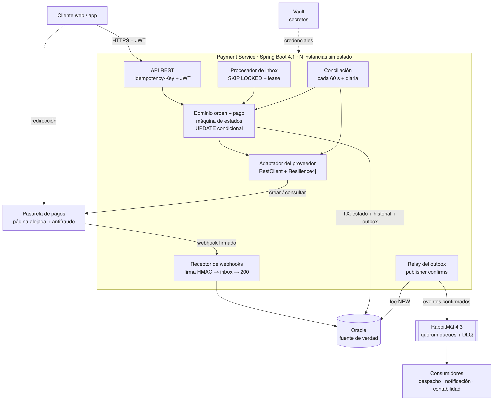
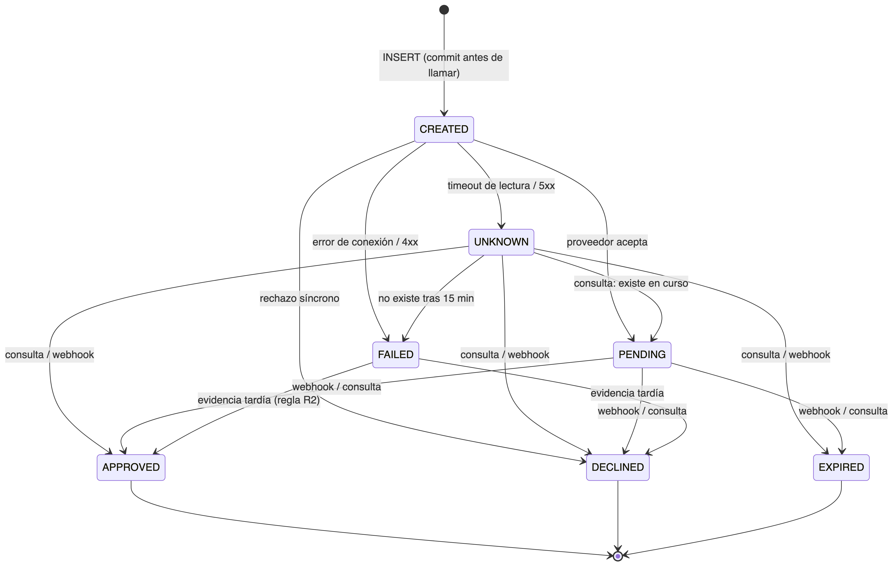
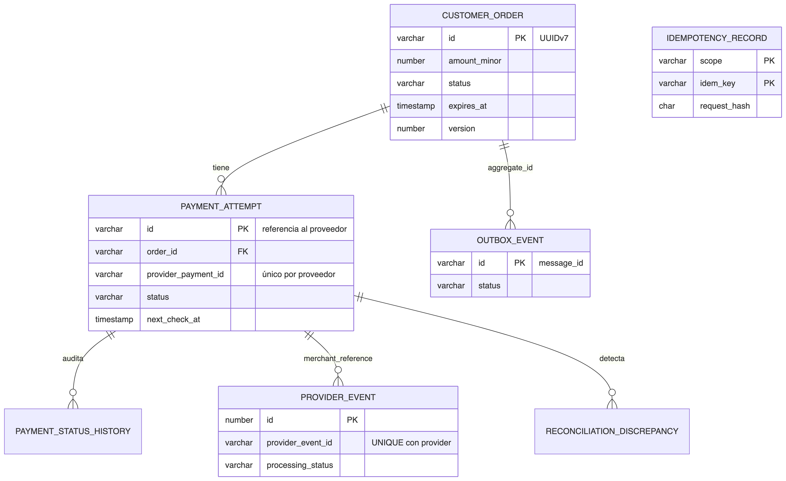
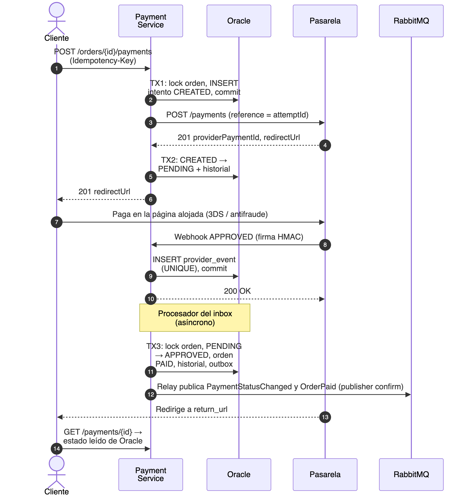
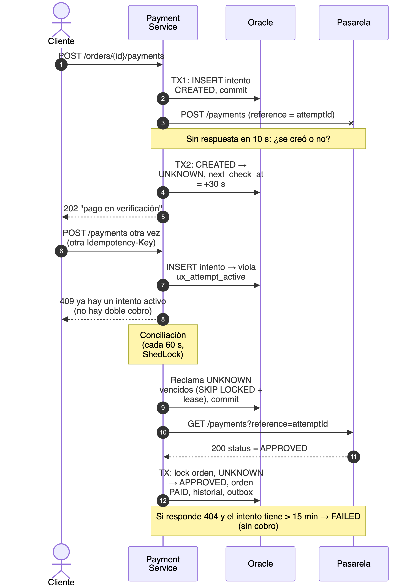
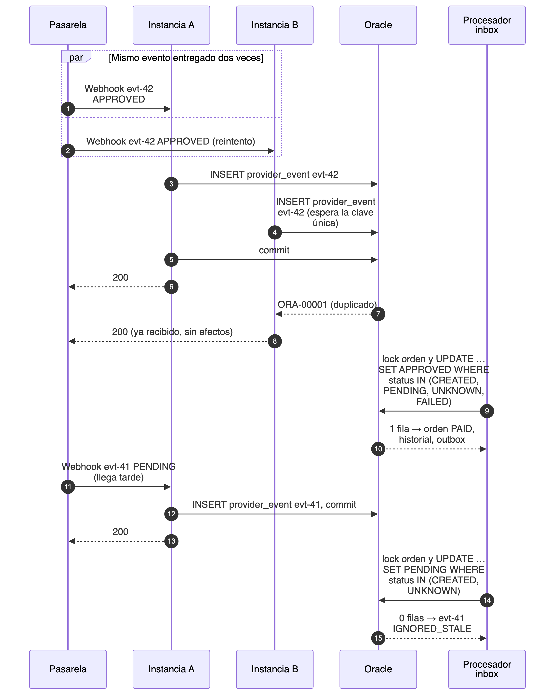

Integración asíncrona con una pasarela de pagos — Diseño técnico
Proceso de selección · Desarrollador Java Senior · Noviembre de 2026
1. Resumen ejecutivo
La propuesta es un Payment Service en Java 25 LTS y Spring Boot 4.1. Modela cada intento de pago como una máquina de estados persistida en Oracle. Obtiene el resultado por dos vías independientes, webhook y consulta activa, y ante la duda nunca crea un segundo cobro.
El sistema entrega mensajes al menos una vez y aplica sus efectos de forma idempotente. El resultado neto es que cada efecto de negocio ocurre exactamente una vez.
| Riesgo del enunciado | Garantía | Mecanismo |
|---|---|---|
| Cobro duplicado | Un reintento técnico nunca crea un segundo cobro | El id del intento viaja al proveedor como referencia única. Un índice único permite un solo intento activo por orden. |
| Notificación repetida | Sus efectos se aplican una sola vez | UNIQUE (provider, provider_event_id) en el inbox y transición condicional en la misma transacción |
| Notificación fuera de orden | Un estado nunca retrocede | Cada transición declara sus estados de origen válidos. Un evento viejo actualiza 0 filas y queda registrado como obsoleto. |
| Notificación perdida | El resultado se obtiene igual | Conciliación periódica por consulta y conciliación diaria contra la liquidación |
| Resultado incierto (timeout) | Nunca se interpreta como rechazo | Estado UNKNOWN hasta que el proveedor confirme. Mientras tanto, el cliente no puede abrir otro intento. |
| Orden en estado incorrecto | La orden cambia en la misma transacción que el pago | Bloqueo de la fila de la orden y actualización condicional de ambos |
| Evento interno perdido | Ningún hecho confirmado deja de publicarse | Transactional Outbox en la misma transacción que el cambio de estado |
| Falta de trazabilidad | Cada transición es reconstruible | Historial de solo inserción con origen, evento del proveedor y correlation_id |
2. Supuestos y reglas de negocio abiertas
2.1 Supuestos sobre el proveedor y el entorno
| Id | Supuesto | Si no se cumple |
|---|---|---|
| S1 | El pago se completa en una página alojada por el proveedor (redirección). Ningún dato de tarjeta pasa por nuestro sistema. | Habría que tokenizar en el cliente y ampliar el alcance PCI DSS. |
| S2 | El proveedor acepta una referencia única del comercio y permite consultar el pago por ella. | Un timeout al crear solo se resuelve con el webhook o la liquidación diaria. |
| S3 | Si el proveedor admite una clave de idempotencia, se envía el mismo id del intento. | El diseño no depende de esto: sin ella, nunca se reintenta una creación con resultado incierto. |
| S4 | Los webhooks llegan firmados (HMAC-SHA256) y traen un id de evento único. | Sin id de evento, la clave es el SHA-256 de (provider_payment_id, estado): repetir el mismo estado no tiene efecto adicional. |
| S5 | El proveedor reintenta los webhooks ante una respuesta distinta de 2xx durante al menos 24 h. | La conciliación cubre la entrega, con más latencia. |
| S6 | El proveedor entrega un archivo o API de liquidación diaria. | La conciliación se limita a consultas individuales. |
| S7 | El antifraude lo ejecuta el proveedor; nuestro sistema refleja su resultado. | Un antifraude propio sería un paso previo a iniciar el pago. |
| S8 | Montos en COP, guardados como enteros en la unidad mínima. Una moneda por orden. | Varias monedas exigen tasa de cambio y redondeo explícitos. |
| S9 | Al menos dos instancias sin estado detrás de un balanceador. La alta disponibilidad de Oracle (Data Guard o RAC) la gestiona infraestructura. | Con una sola instancia el diseño funciona igual, sin tolerancia a la caída de un nodo. |
| S10 | Dimensionamiento de referencia, a validar: picos de 50 pagos/s y 150 webhooks/s. | Se recalibran los timeouts, pools y umbrales de la sección 9. |
2.2 Reglas de negocio no especificadas
| Id | Pregunta | Decisión propuesta | Impacto si el negocio decide distinto |
|---|---|---|---|
| R1 | ¿Varios intentos simultáneos por orden? | No. Máximo un intento activo (CREATED, PENDING, UNKNOWN). Tras un rechazo o expiración se permite uno nuevo. |
Permitirlo elimina el índice de intento activo y exige reembolsar automáticamente los cobros sobrantes. |
| R2 | ¿Pago aprobado sobre una orden ya pagada, expirada o cancelada? | El cobro es real y se registra. Una orden expirada o cancelada pasa a REQUIRES_REVIEW. Una orden pagada se mantiene PAID. En ambos casos se emite RefundRequired y una alerta. |
Si el negocio prefiere entregar, la orden expirada pasa a PAID. |
| R3 | ¿Cuánto dura una orden sin pagar? | 30 min. No expira mientras tenga un intento activo. | Cambia un parámetro del job de expiración. |
| R4 | ¿Pagos parciales o montos distintos? | No. Un monto o moneda distintos son una discrepancia y la orden pasa a REQUIRES_REVIEW. |
Exige un saldo pagado por orden y varios intentos aprobados. |
| R5 | ¿Cuánto esperar un resultado incierto? | Consultas con backoff durante 48 h y luego revisión manual. Nunca se marca rechazado sin evidencia. | Cambia el límite de la conciliación. |
| R6 | ¿Se puede cancelar una orden con pago en curso? | No, mientras exista un intento activo. | Exige cancelar el pago en el proveedor, si lo admite. |
| R7 | ¿Reembolsos y contracargos? | Fuera de alcance. Se emite RefundRequired como punto de extensión. |
Requiere un subdominio de reembolsos. |
3. Stack tecnológico
Cada pieza se eligió por una propiedad que el problema necesita. Versiones validadas el 20-11-2026.
| Capa | Elección | Por qué |
|---|---|---|
| Lenguaje | Java 25 LTS (el código compila también con 21) | Virtual threads para muchas llamadas de I/O concurrentes con código imperativo. Desde JDK 24 (JEP 491) un virtual thread ya no fija su hilo de plataforma dentro de synchronized, que era el problema con drivers JDBC en Java 21. |
| Framework | Spring Boot 4.1.3 | Último parche de la línea estable, con soporte OSS hasta julio de 2027. La 4.0 pierde soporte el 31-12-2026. La 4.2.0 salió el 19-11-2026; se evaluará tras sus primeros parches. Usa las APIs de Jakarta EE (Servlet, Bean Validation). |
| Estilo | Monolito modular con arquitectura hexagonal | Orden y pago comparten una transacción ACID. Los microservicios exigirían sagas sin aportar nada a este alcance. Los puertos aíslan al proveedor. |
| Base de datos | Oracle (DDL compatible con 19c) | Fuente de verdad. Índices únicos sobre expresiones (equivalen a índices parciales), FOR UPDATE SKIP LOCKED, particionamiento por intervalo. 19c tiene soporte Premier hasta 2029. |
| Persistencia | Spring JdbcClient con SQL explícito |
Las transiciones dependen de UPDATE … WHERE status IN (…), FOR UPDATE SKIP LOCKED e índices sobre expresiones. Con SQL explícito la garantía de concurrencia es visible y comprobable, sin depender de lo que genere un ORM. JPA sería válido para lecturas o pantallas de soporte. |
| PL/SQL | Paquete de conciliación diaria | Comparación por conjuntos sobre volumen alto, donde están los datos. La lógica transaccional queda en Java. |
| Migraciones | Flyway | DDL versionado, el mismo en pruebas y producción. |
| Mensajería | RabbitMQ 4.3, quorum queues | Difunde hechos confirmados a otros sistemas. La 4.3 trae reintentos con retardo nativos en quorum queues y DLQ. |
| Consistencia BD ↔ broker | Transactional Outbox con relay propio | Evita la escritura doble y el two-phase commit, sin infraestructura adicional. |
| Cliente del proveedor | RestClient (HTTP/1.1) y Resilience4j 2.4 (módulos core, configuración programática) |
Un solo mecanismo para timeouts, circuit breaker, bulkhead y reintentos selectivos, con métricas en Micrometer. La configuración en código deja explícito qué se reintenta y qué no. @Retryable de Spring 7 no trae circuit breaker. |
| Jobs | @Scheduled y ShedLock |
Un solo nodo ejecuta cada corrida. |
| Seguridad | Spring Security (OAuth2 Resource Server) y HashiCorp Vault | JWT para la API; firma propia en el webhook; secretos rotables fuera del código. |
| Observabilidad | Logs JSON estructurados, Micrometer, OpenTelemetry (OTLP), Prometheus y Grafana | Formato y exportadores nativos de Boot 4. |
| Pruebas | JUnit 5, AssertJ, Testcontainers (Oracle Free), WireMock, Awaitility | Integración contra Oracle real; WireMock simula los fallos del proveedor. Propuestas para la siguiente fase: Testcontainers RabbitMQ, ArchUnit y Gatling (sección 12). |
Descartados:
- Redis: una segunda fuente de verdad puede desincronizarse; la clave única en la misma transacción es más fuerte.
- Kafka: no hace falta reprocesar un log ni ese throughput.
- WebFlux: los virtual threads dan la misma escalabilidad con código más legible.
- Debezium: más infraestructura de la que este volumen necesita.
- Microservicios: romperían la atomicidad entre orden y pago.
Portabilidad a Jakarta EE:
- Spring MVC ↔ JAX-RS
@Transactional↔ JTA- RabbitMQ ↔ JMS
- JPA es la misma
4. Arquitectura
Todo cambio de estado se confirma primero en Oracle. RabbitMQ solo difunde hechos ya confirmados.

4.1 Responsabilidades
| Componente | Responsabilidad | No hace |
|---|---|---|
| API REST | Crea órdenes, inicia intentos de pago y expone su estado. Exige Idempotency-Key en cada POST y JWT en todas las llamadas. |
No llama al proveedor dentro de una transacción abierta. |
| Dominio (orden y pago) | Contiene las máquinas de estado y aplica cada transición con UPDATE condicional. En la misma transacción escribe el historial y el outbox. |
No conoce HTTP ni el formato del proveedor. |
| Adaptador del proveedor | Implementa PaymentProviderPort (crear, consultar). Traduce estados; aplica timeouts, circuit breaker y bulkhead. |
No escribe en la base de datos. |
| Receptor de webhooks | Verifica la firma y la frescura. Guarda en el inbox y responde 200. | No aplica efectos de negocio; así responde en milisegundos y no pierde eventos. |
| Procesador del inbox | Reclama eventos pendientes con SKIP LOCKED y los aplica al dominio con reintentos. |
No decide por su cuenta: delega en la máquina de estados. |
| Conciliación | Cada 60 s consulta los intentos CREATED antiguos, UNKNOWN y PENDING vencidos. Una vez al día compara la liquidación con PL/SQL. |
No resuelve un caso incierto sin evidencia. |
| Relay del outbox | Publica los eventos confirmados con confirmación del broker y los marca SENT. |
No garantiza entrega única; los consumidores deduplican por message_id. |
| Oracle | Fuente de verdad. | — |
| RabbitMQ | Entrega eventos a otros sistemas, con reintentos y DLQ. | No es fuente de verdad. |
| Vault | Credenciales del proveedor, secretos HMAC (dos vigentes durante una rotación) y credenciales de BD. | — |
4.2 Decisiones clave
- Dos transacciones cortas alrededor de la llamada al proveedor. La primera guarda el intento en
CREATEDy hace commit antes de llamar. Así:- un webhook que llegue antes que la respuesta ya encuentra el intento por su referencia;
- una caída a mitad de camino deja rastro para la conciliación;
- ninguna conexión ni bloqueo de BD queda retenido durante la llamada HTTP.
- El webhook es señal, no la única fuente. Webhook y consulta activa pasan por la misma máquina de estados: el primero que llega gana y el segundo es un no-op.
- Un mismo patrón de trabajo distribuido. El inbox, el outbox y la conciliación reclaman trabajo con
FOR UPDATE SKIP LOCKEDy un lease (next_attempt_at). Si una instancia muere, el lease vence y otra la retoma. - Instancias sin estado: todo el estado vive en Oracle, así que el escalado es horizontal.
4.3 Contrato de los eventos publicados
Cada evento viaja en un sobre con metadatos, inspirado en CloudEvents. El eventId es también el message_id AMQP y el id de la fila en outbox_event.
{
"eventId": "01a1fa9a-b9a0-7052-87e4-89bc83a47e80",
"eventType": "PaymentStatusChanged",
"schemaVersion": 1,
"occurredAt": "2026-11-20T20:16:46.496Z",
"source": "payment-service",
"correlationId": "01a1fa9a-b973-79d7-9507-cef950d69536",
"data": {
"payment": { "attemptId": "…", "orderId": "…", "provider": "DEMO", "providerPaymentId": "pay_1" },
"amount": { "valueMinor": 150000, "currency": "COP" },
"transition": { "from": "PENDING", "to": "APPROVED" }
}
}
| Campo | Para qué sirve |
|---|---|
eventId |
El consumidor descarta duplicados (entrega at-least-once). |
eventType |
También es la routing key del exchange topic payments.events. |
schemaVersion |
Un cambio incompatible publica la versión 2 sin romper a los consumidores actuales. |
occurredAt |
Permite al consumidor descartar un evento más viejo que el último que aplicó. |
correlationId |
Une el evento con la petición HTTP y los logs que lo originaron. |
Tipos: PaymentStatusChanged, OrderPaid, RefundRequired y PaymentNeedsReview. Los montos van siempre en unidades mínimas y como enteros.
5. Máquinas de estado
Un intento de pago solo avanza. Un timeout lo lleva a UNKNOWN, nunca a un nuevo cobro.

5.1 Intento de pago: transiciones permitidas
La tabla es la especificación que implementa PaymentStateMachine. Los orígenes de cada fila son exactamente la lista status IN (…) del UPDATE condicional.
| Destino | Orígenes permitidos | Lo provoca |
|---|---|---|
PENDING |
CREATED, UNKNOWN |
Creación aceptada, o una consulta que encuentra el pago en curso |
UNKNOWN |
CREATED |
Timeout de lectura o 5xx al crear; intento CREATED huérfano de más de 2 min |
APPROVED |
CREATED, PENDING, UNKNOWN, FAILED |
Webhook, consulta o liquidación |
DECLINED |
CREATED, PENDING, UNKNOWN, FAILED |
Webhook, consulta o rechazo síncrono |
EXPIRED |
CREATED, PENDING, UNKNOWN, FAILED |
El proveedor informa que el cliente no completó el pago |
FAILED |
CREATED, UNKNOWN |
Error de conexión o 4xx al crear, o referencia no encontrada tras 15 min |
Hay dos clases de estado terminal:
- Informados por el proveedor (
APPROVED,DECLINED,EXPIRED). Son definitivos. Un evento que los contradiga queda registrado y genera una alerta crítica. - Inferido por nosotros (
FAILED). Se basa en la ausencia de evidencia, así que la evidencia del proveedor puede corregirlo.
5.2 Orden
| Estado | Entra cuando | Sale a |
|---|---|---|
AWAITING_PAYMENT |
Se crea la orden | PAID, EXPIRED, CANCELLED, REQUIRES_REVIEW |
PAID |
Un intento pasa a APPROVED con el monto y la moneda esperados |
Terminal. Un segundo cobro aprobado emite RefundRequired. |
EXPIRED |
expires_at vencido y sin intento activo |
REQUIRES_REVIEW si llega una aprobación tardía |
CANCELLED |
El cliente cancela sin intento activo | REQUIRES_REVIEW si llega una aprobación tardía |
REQUIRES_REVIEW |
Aprobación sobre una orden no pagable, o monto distinto | Resolución manual o reembolso (fuera de alcance) |
6. Modelo de datos
Siete tablas sostienen las garantías. Tres restricciones hacen el trabajo crítico:
- el índice único de intento activo;
- el
UNIQUEdel inbox; - la PK de idempotencia.

| Tabla | Propósito | Restricciones e índices relevantes |
|---|---|---|
customer_order |
Orden y su estado | CHECK de estado y monto > 0. Índice (status, expires_at) para la expiración. |
payment_attempt |
Cada intento de cobro. Su id es la referencia enviada al proveedor. |
Único de intento activo por orden. Único de provider_payment_id. Índice (status, next_check_at) para conciliación. |
payment_status_history |
Auditoría de solo inserción | Particionada por mes. El usuario de la aplicación solo tiene INSERT y SELECT. |
provider_event |
Inbox de webhooks | UNIQUE (provider, provider_event_id). Índice (processing_status, next_attempt_at). |
outbox_event |
Eventos por publicar | Índice (status, next_attempt_at) |
idempotency_record |
Idempotency-Key → recurso creado |
La PK impide procesar dos veces; request_hash detecta una clave reutilizada con otro cuerpo (422). |
reconciliation_discrepancy |
Diferencias halladas | Índice (resolution, detected_at) |
Convenciones:
- Ids: UUIDv7 generados en la aplicación. Se envían al proveedor sin una ida extra a la BD y, al ser ordenables por tiempo, no fragmentan el índice.
- Fechas:
TIMESTAMPen UTC. Oracle no admiteTIMESTAMP WITH TIME ZONEcomo clave de particionamiento por intervalo. - Montos:
NUMBER(19)en la unidad mínima de la moneda.
Dos detalles propios de Oracle:
- Índice "parcial". Oracle no tiene índices parciales, pero no indexa filas cuya clave es enteramente
NULL. Un índice único sobreCASE WHEN status IN (…) THEN order_id ENDcubre solo los intentos activos. UNIQUEcon columnas nulas. UnUNIQUE (provider, provider_payment_id)normal fallaría: Oracle considera duplicadas dos filas con el mismoprovideryprovider_payment_idnulo, y los intentosCREATEDaún no tienen ese id. Por eso se usa una expresión que excluye las filas con id nulo.
El DDL completo está en el Anexo A (migraciones Flyway V1__schema.sql y V2__settlement.sql).
7. Secuencias
7.1 Flujo exitoso

La redirección de retorno puede llegar antes que el webhook. La página de retorno no confía en sus parámetros: muestra el estado guardado en Oracle y lo consulta periódicamente mientras siga PENDING.
7.2 Timeout al crear: UNKNOWN y conciliación

7.3 Webhook duplicado, concurrente y fuera de orden

8. Idempotencia y concurrencia
La idempotencia se aplica en cuatro capas. En todas, la garantía final la da una restricción de Oracle evaluada dentro de la transacción, no una comprobación previa en memoria.
| Capa | Clave | Dónde se persiste | Con dos ejecuciones concurrentes |
|---|---|---|---|
| API del cliente | Idempotency-Key + scope |
idempotency_record, PK (scope, idem_key), misma TX que crea el recurso |
El segundo INSERT espera y recibe ORA-00001: se devuelve el mismo recurso (mismo id, estado actual). Si el cuerpo es distinto, 422. |
| Intento activo | order_id mientras el intento es CREATED/PENDING/UNKNOWN |
Índice único ux_attempt_active |
Solo un INSERT prospera; el otro recibe 409. Es la barrera contra el doble clic con claves distintas. |
| Hacia el proveedor | payment_attempt.id como referencia (y clave de idempotencia si se admite) |
Columna id, con commit antes de la llamada |
Un reintento usa la misma referencia. Un timeout de lectura nunca se reintenta a ciegas: pasa a UNKNOWN. |
| Webhooks | (provider, provider_event_id) |
provider_event, UNIQUE |
El segundo INSERT recibe ORA-00001 y se responde 200 sin efectos. |
Regla de concurrencia única: toda transacción que modifica una orden o sus intentos bloquea primero la fila de la orden (SELECT … FOR UPDATE) y después actúa sobre el intento.
- Serialización por orden. Dos eventos del mismo pago se aplican uno tras otro, y el segundo ve el estado que dejó el primero. Entre órdenes distintas no hay contención.
- Sin interbloqueos. El orden de bloqueo es siempre orden → intento. El caso que lo motiva: un webhook aprueba un intento mientras el cliente abre otro. Sin esta regla, el índice de intento activo y la orden se bloquearían en orden inverso (
ORA-00060). - El
UPDATEcondicional decide. Si afecta 1 fila, se aplican los efectos. Si afecta 0, el evento era duplicado u obsoleto y se registra comoIGNORED_STALE. - Nunca un bloqueo durante una llamada HTTP. La conciliación reclama con un lease en una transacción corta, llama al proveedor sin transacción abierta y aplica el resultado en otra transacción.
- Detalles de Oracle:
- Oracle no permite
FETCH FIRSTjunto conFOR UPDATE: el lote se limita conmaxRowsdel cursor. - Ante dos
UPDATEsobre la misma fila, Oracle reevalúa elWHEREdel segundo contra la versión confirmada (write consistency).
- Oracle no permite
La implementación está en PaymentTransitionService del repositorio.
9. Resiliencia y recuperación
Solo se reintenta lo que es seguro reintentar. Lo demás se convierte en un estado explícito que resuelve la conciliación. Las cifras son valores iniciales y se calibran con el SLA del proveedor.
9.1 Timeouts y reintentos
| Operación | Timeout | Reintentos | Al agotarse |
|---|---|---|---|
| Crear pago (POST) | Conexión 2 s, respuesta 10 s | Solo ante un fallo de conexión (la petición no salió): 2 reintentos, 200/400 ms con jitter. Ante un timeout de lectura o 5xx: ninguno. | Conexión o 4xx: FAILED. Lectura o 5xx: UNKNOWN y respuesta 202. |
| Consultar estado (GET) | Conexión 2 s, respuesta 5 s | 2 reintentos (3 intentos en total), backoff exponencial desde 250 ms con jitter; leer es seguro | Se reprograma next_check_at. |
| Circuit breaker | Ventana de 100 llamadas; se abre con 50 % de fallos o 50 % de llamadas de más de 5 s | 30 s abierto y 10 llamadas de prueba | Los nuevos pagos reciben 503 sin crear intento; la conciliación se pausa. |
| Bulkhead | — | Máximo 100 llamadas concurrentes | Con virtual threads no hay pool que limite la concurrencia; este límite protege al proveedor. |
| Procesador del inbox | Lease de 60 s | 10 intentos, backoff de 1 s a 10 min | FAILED, alerta y reproceso manual: una DLQ dentro de la BD. |
| Relay del outbox | Confirmación del broker: 5 s | Ilimitados, backoff hasta 1 min. Se publica como mandatory: un mensaje sin cola de destino vuelve al relay y se reintenta. |
Alerta si el pendiente más antiguo supera 2 min. Nada se descarta. |
| Consumidores RabbitMQ | — | delivery-limit 5 con reintento con retardo nativo |
DLQ, alerta y reenvío manual. |
Conciliación UNKNOWN |
— | A los 30 s, luego 1, 2, 4… min (máx. 30 min entre consultas), durante 48 h | Alerta crítica y revisión manual (regla R5); nunca se resuelve sin evidencia. |
| Oracle | Sentencia 5 s; Hikari connectionTimeout 3 s |
— | La API y el webhook responden 503; el proveedor reintenta. |
9.2 Conciliación
Incremental, cada 60 s (ShedLock):
- Reclama con
SKIP LOCKEDy un lease los intentos:CREATEDcon más de 2 min (caída entre la llamada y el guardado);UNKNOWNconnext_check_atvencido;PENDINGcon más de 15 min (posible webhook perdido).
- Consulta al proveedor por la referencia.
- Aplica el resultado con la misma
transition(...)que usa el webhook, con origenRECONCILIATION. - Si la referencia no existe y el intento tiene más de 15 min, lo marca
FAILED.
Diaria, contra la liquidación (04:30 UTC, sobre el día anterior, un solo nodo con ShedLock):
- El puerto
SettlementFilePortobtiene el archivo del día. La implementación incluida lee<PROVEEDOR>_<fecha>.csvdel buzón donde el proceso SFTP lo deja. Si el archivo no llegó, la corrida falla y alerta: conciliar contra un archivo vacío marcaría todo como no liquidado. - Java borra y recarga las líneas del día en
settlement_line, en lote. Si una línea está repetida, se revierte la carga completa. pkg_settlement.compare(p_run_date, p_provider)cruza por conjuntos conpayment_attempty registra enreconciliation_discrepancy:
| Tipo | Significa | Resolución |
|---|---|---|
APPROVED_NOT_HERE |
Liquidado como aprobado y aquí no está APPROVED (o no existe) |
Automática si la máquina de estados lo permite: transition(...) con origen SETTLEMENT y la discrepancia pasa a AUTO_FIXED. Si aquí está DECLINED/EXPIRED o el pago no existe: revisión manual. |
NOT_SETTLED |
APPROVED aquí ese día y sin línea aprobada en la liquidación |
Revisión manual |
AMOUNT_MISMATCH |
Línea aprobada con monto o moneda distintos | Revisión manual |
La corrida es idempotente: un índice único sobre las discrepancias abiertas impide duplicarlas si el archivo se reenvía. Operaciones puede re-ejecutar un día con POST /admin/settlement/run?date=…, endpoint expuesto solo en la red interna.
9.3 Matriz de recuperación
| Escenario | Qué queda | Cómo se recupera |
|---|---|---|
| Caída entre llamar al proveedor y guardar la respuesta | Intento CREATED |
La conciliación lo toma a los 2 min y consulta por referencia. |
| Caída mientras se procesa un webhook | Evento RECEIVED con lease vencido |
Otra instancia lo reprocesa; la transición es idempotente. |
Caída tras publicar y antes de marcar SENT |
Evento del outbox NEW |
Se republica; los consumidores deduplican por message_id. |
| Proveedor caído o lento | Circuit breaker abierto | 503 rápido a los nuevos pagos; los pendientes se concilian al cerrar el circuito. |
| Webhook perdido | PENDING sin avance |
Conciliación a los 15 min; como último recurso, la liquidación diaria. |
| Oracle no disponible | Nada se confirma | 503 y reintento del proveedor. No queda estado a medias. |
| RabbitMQ no disponible | El outbox acumula | El relay drena sin pérdida al volver el broker. |
| Mensaje sin cola de destino | El broker lo devuelve (mandatory) |
El evento sigue NEW y se reintenta; alerta por payments_outbox_unroutable. |
| Mensaje que siempre falla | — | DLQ tras 5 entregas y reenvío manual. |
| Resultado incierto | UNKNOWN; el cliente no puede abrir otro intento |
Conciliación hasta 48 h y luego revisión manual. |
10. Seguridad
- Autenticidad e integridad del webhook:
- HMAC-SHA256 sobre
timestamp + "." + cuerpo crudo, comparado en tiempo constante (MessageDigest.isEqual). - Se rechaza un timestamp con más de 5 min de desfase (anti-replay). El
UNIQUEdel inbox cubre la repetición dentro de esa ventana. - Se aceptan dos secretos vigentes durante una rotación.
- Una firma inválida responde 401, no se persiste e incrementa una métrica.
- Defensa en profundidad: lista de IPs del proveedor si la publica, tamaño máximo del cuerpo de 64 KB y rate limit.
- HMAC-SHA256 sobre
- Retorno del cliente: los parámetros de la URL de retorno no se usan como fuente de estado; podrían manipularse.
- Datos de tarjeta: nunca pasan por el sistema (página alojada, S1). El alcance PCI DSS se reduce al cuestionario SAQ A.
- Credenciales: en Vault, nunca en el repositorio, en la configuración ni en los logs. Credenciales de BD dinámicas y usuario de aplicación sin privilegios de DDL.
- Datos personales:
- El inbox guarda solo una lista blanca de campos del payload.
- Los logs enmascaran correos y documentos.
- Tráfico con TLS 1.2+; cifrado en reposo con Oracle TDE si la licencia lo permite.
- Cumplimiento de la Ley 1581 de 2012 (protección de datos personales).
- Integridad de la auditoría: el historial solo admite
INSERT. El usuario de aplicación no tieneUPDATEniDELETEsobre esa tabla. - API: OAuth2/JWT y validación de entrada con Bean Validation.
11. Observabilidad
Logs JSON estructurados:
- Campos siempre presentes:
trace_id,correlation_id,order_id,attempt_id,provider_payment_id,provider_event_id,from_status,to_status,source. - Nunca se registran: datos de tarjeta, secretos, cabeceras de firma ni payloads completos.
- Correlación: el
trace_id(W3Ctraceparent) cubre cada petición. El webhook no trae nuestra traza, así que la unión entre trazas la haceattempt_id, que viaja como referencia de ida y vuelta.
| Métrica | Alerta |
|---|---|
Intentos UNKNOWN y antigüedad del más viejo |
> 15 min: aviso. > 2 h: crítica. |
| Antigüedad del evento del outbox más viejo sin enviar | > 2 min |
Backlog del inbox y eventos FAILED |
Backlog > 1.000 o > 5 min; cualquier FAILED |
| Profundidad de la DLQ | > 0 |
| Firmas de webhook inválidas | > 10 en 5 min (ataque o rotación mal hecha) |
| Latencia p99 y errores del proveedor; estado del circuit breaker | Circuito abierto > 1 min |
| Tasa de aprobación | Caída > 30 % frente a la misma hora de la semana anterior |
| Discrepancias de conciliación | > 0 |
| Eventos duplicados u obsoletos ignorados | Informativa |
Reconstruir el ciclo de vida de una transacción:
SELECT h.occurred_at, h.from_status, h.to_status, h.source,
e.provider_event_id, e.event_type, h.correlation_id
FROM payment_status_history h
LEFT JOIN provider_event e ON e.id = h.provider_event_ref
WHERE h.order_id = :orderId
ORDER BY h.occurred_at;
12. Estrategia de pruebas
La columna Estado distingue lo que ya está automatizado en la implementación de referencia de lo que se propone para la siguiente fase.
| Nivel | Qué valida | Herramienta | Casos clave | Estado |
|---|---|---|---|---|
| Unitarias | Máquina de estados | JUnit 5, AssertJ | Los 49 pares origen → destino de la tabla 5.1, permitidos o rechazados | Implementada (PaymentStateMachineTest) |
| Unitarias | Verificación de firma | JUnit 5 | Firma válida, cuerpo alterado, timestamp vencido o absurdo, segundo secreto en rotación | Implementada (WebhookSignatureVerifierTest) |
| Unitarias | Clave del inbox | JUnit 5 | Id del proveedor o hash de (pago, estado) cuando falta (supuesto S4) | Implementada (WebhookEventKeyTest) |
| Proveedor simulado | Políticas de resiliencia | WireMock | Éxito; timeout de lectura → UNKNOWN sin reintento; 5xx → UNKNOWN; conexión rechazada → FAILED; 4xx; 409; consulta con reintentos |
Implementada (HttpPaymentProviderAdapterTest) |
| Integración | Flujo completo en Oracle real | Testcontainers (Oracle Free), Flyway | Webhook aprueba el pago y paga la orden una sola vez | Implementada (PaymentFlowIT) |
| Concurrencia | Exactamente un efecto | CountDownLatch, ExecutorService |
Mismo webhook ×2 en paralelo → 1 historial y 1 evento. PENDING y APPROVED cruzados → final APPROVED |
Implementada (PaymentFlowIT) |
| Fuera de orden | No hay retroceso | Integración | APPROVED y luego PENDING → sigue APPROVED; el evento queda IGNORED_STALE |
Implementada (PaymentFlowIT) |
| Idempotencia API | Una sola llamada al proveedor | Integración + WireMock | Misma Idempotency-Key dos veces → mismo intento, 1 POST al proveedor |
Implementada (PaymentFlowIT) |
| Recuperación | Resultado incierto | Integración, WireMock, Awaitility | Timeout → UNKNOWN, segundo intento bloqueado, la conciliación resuelve |
Implementada (PaymentFlowIT) |
| Monto distinto | Regla R2 | Integración | Aprobado con otro monto → orden REQUIRES_REVIEW y discrepancia |
Implementada (PaymentFlowIT) |
| Conciliación diaria | PL/SQL pkg_settlement |
Integración | Los 3 tipos de discrepancia, corrección automática e idempotencia | Implementada (SettlementIT) |
| Mensajería | Outbox | Testcontainers (RabbitMQ) | Broker caído → el outbox acumula y luego drena; mensaje sin cola → no se marca SENT |
Propuesta (verificado a mano con el entorno local) |
| Arquitectura | Límites hexagonales | ArchUnit | El dominio no depende de Spring Web ni de los adaptadores | Propuesta |
| Carga | Webhooks y API | Gatling | 150 webhooks/s con p99 < 200 ms | Propuesta |
Total automatizado: 84 pruebas (73 unitarias y 11 de integración), en verde con ./mvnw verify.
13. Limitaciones y trabajo futuro
- Reembolsos y contracargos: fuera de alcance; solo se emite
RefundRequired. - UX con resultado incierto: mientras un intento está
UNKNOWN, el cliente no puede pagar de nuevo, normalmente por segundos o minutos. Es una decisión deliberada para no cobrar dos veces. - Orden de los eventos en RabbitMQ: no está garantizado por agregado. Los consumidores usan el estado,
occurredAtyschemaVersiondel sobre (sección 4.3), no el orden de llegada. - Usuario de base de datos: en la implementación de referencia, Flyway migra con el mismo usuario de la aplicación. En producción las migraciones corren en el pipeline con un usuario dueño del esquema y la aplicación solo tiene DML.
- Throughput del inbox: cada instancia procesa su lote de forma secuencial. Si no alcanza el pico (S10), se paraleliza el lote con virtual threads; la transición idempotente lo permite.
- Tamaño del webhook: el límite de 64 KB se valida después de leer el cuerpo. En producción el gateway o el balanceador corta antes por
Content-Length. - Carrera con el circuit breaker: si el circuito se abre entre que se crea el intento y se llama al proveedor, el intento queda
FAILEDen vez de responder 503 sin crearlo. El cliente puede reintentar con un nuevo intento. - Un solo proveedor: el puerto
PaymentProviderPortpermite añadir otros con enrutamiento. - Región única: el RPO y el RTO dependen de la configuración de Oracle Data Guard.
- Licencias: el particionamiento por intervalo requiere la opción Partitioning de Oracle EE; sin ella, la purga se hace por lotes con PL/SQL.
- Calibración: las cifras de timeouts y umbrales son iniciales.
14. Herramientas utilizadas
- Asistente de IA: herramienta de apoyo para investigación, validación de versiones, redacción y código. El candidato revisó y validó todo el contenido, y asume y sustenta cada decisión en la defensa técnica.
- Diagramas: Mermaid.
- Implementación de referencia: Java 21+/Spring Boot 4.1.3 con el núcleo del diseño: máquina de estados, transición idempotente, inicio de pago con
UNKNOWN, webhooks firmados, inbox, outbox con sobre versionado, conciliación incremental y conciliación diaria en PL/SQL con lector de archivo. Incluye 84 pruebas automatizadas (73 unitarias y 11 de integración contra Oracle real con Testcontainers). - Entorno local y demos: Docker Compose con Oracle Free, RabbitMQ y una pasarela simulada (WireMock). Tres scripts reproducen los escenarios de este documento contra el servicio real: flujo completo con duplicados y eventos fuera de orden, timeout resuelto por conciliación, y conciliación diaria con los tres tipos de discrepancia. Una consola web recorre esos escenarios paso a paso con botones y muestra cada petición, el historial guardado en Oracle y los eventos publicados en RabbitMQ. El repositorio se puede probar sin instalar nada en https://prueba-tecnica-pasarela-pagos-launcher-gelsa.vercel.app, que enciende el entorno en GitHub Codespaces y abre la consola. Código: https://github.com/Alexcr666/prueba-tecnica-pasarela-pagos.
Fuentes de versiones:
- Spring Boot: versiones y fechas de soporte
- JEP 491
- RabbitMQ 4.3
- Resilience4j
- Spring Framework 7: funciones de resiliencia
- Oracle AI Database 26ai
Anexo A. DDL (Oracle 19c+)
A.1 Esquema principal (V1__schema.sql)
-- =====================================================================
-- Payment Service - esquema inicial (Oracle 19c+)
-- Convenciones: ids UUIDv7 generados en la aplicación, fechas TIMESTAMP en UTC,
-- montos NUMBER(19) en la unidad mínima de la moneda.
-- =====================================================================
-- Orden ---------------------------------------------------------------
CREATE TABLE customer_order (
id VARCHAR2(36) PRIMARY KEY,
customer_id VARCHAR2(64) NOT NULL,
amount_minor NUMBER(19) NOT NULL CHECK (amount_minor > 0),
currency CHAR(3) NOT NULL,
status VARCHAR2(20) NOT NULL CHECK (status IN
('AWAITING_PAYMENT','PAID','EXPIRED','CANCELLED','REQUIRES_REVIEW')),
expires_at TIMESTAMP NOT NULL,
version NUMBER(10) DEFAULT 0 NOT NULL,
created_at TIMESTAMP DEFAULT SYS_EXTRACT_UTC(SYSTIMESTAMP) NOT NULL,
updated_at TIMESTAMP DEFAULT SYS_EXTRACT_UTC(SYSTIMESTAMP) NOT NULL
);
CREATE INDEX ix_order_expiry ON customer_order (status, expires_at);
CREATE INDEX ix_order_customer ON customer_order (customer_id, created_at);
-- Intento de pago -----------------------------------------------------
CREATE TABLE payment_attempt (
id VARCHAR2(36) PRIMARY KEY, -- referencia enviada al proveedor
order_id VARCHAR2(36) NOT NULL REFERENCES customer_order (id),
attempt_no NUMBER(3) NOT NULL,
provider VARCHAR2(20) NOT NULL,
provider_payment_id VARCHAR2(64),
amount_minor NUMBER(19) NOT NULL,
currency CHAR(3) NOT NULL,
status VARCHAR2(20) NOT NULL CHECK (status IN
('CREATED','PENDING','UNKNOWN','APPROVED','DECLINED','EXPIRED','FAILED')),
status_reason VARCHAR2(100),
redirect_url VARCHAR2(1000),
check_count NUMBER(5) DEFAULT 0 NOT NULL,
next_check_at TIMESTAMP,
version NUMBER(10) DEFAULT 0 NOT NULL,
created_at TIMESTAMP DEFAULT SYS_EXTRACT_UTC(SYSTIMESTAMP) NOT NULL,
updated_at TIMESTAMP DEFAULT SYS_EXTRACT_UTC(SYSTIMESTAMP) NOT NULL,
CONSTRAINT uq_attempt_no UNIQUE (order_id, attempt_no) -- también indexa la FK
);
-- Como máximo un intento activo por orden (regla R1).
-- Oracle no indexa claves enteramente NULL: el índice solo contiene intentos activos.
CREATE UNIQUE INDEX ux_attempt_active ON payment_attempt (
CASE WHEN status IN ('CREATED','PENDING','UNKNOWN') THEN order_id END);
-- Id del proveedor único, ignorando los intentos que aún no lo tienen.
-- Un UNIQUE (provider, provider_payment_id) normal trataría como duplicadas
-- dos filas con el mismo provider y provider_payment_id NULL.
CREATE UNIQUE INDEX ux_provider_payment ON payment_attempt (
CASE WHEN provider_payment_id IS NOT NULL THEN provider END, provider_payment_id);
CREATE INDEX ix_attempt_recon ON payment_attempt (status, next_check_at);
-- Historial de transiciones (solo inserción) ---------------------------
-- En producción: PARTITION BY RANGE (occurred_at) INTERVAL (NUMTOYMINTERVAL(1,'MONTH'))
-- (requiere la opción Partitioning; se omite aquí para que corra en Oracle Free).
CREATE TABLE payment_status_history (
id NUMBER GENERATED ALWAYS AS IDENTITY PRIMARY KEY,
attempt_id VARCHAR2(36) NOT NULL REFERENCES payment_attempt (id),
order_id VARCHAR2(36) NOT NULL,
from_status VARCHAR2(20),
to_status VARCHAR2(20) NOT NULL,
source VARCHAR2(20) NOT NULL CHECK (source IN
('API','WEBHOOK','RECONCILIATION','SETTLEMENT','MANUAL')),
provider_event_ref NUMBER,
correlation_id VARCHAR2(64) NOT NULL,
detail VARCHAR2(400),
occurred_at TIMESTAMP DEFAULT SYS_EXTRACT_UTC(SYSTIMESTAMP) NOT NULL
);
CREATE INDEX ix_history_attempt ON payment_status_history (attempt_id, occurred_at);
CREATE INDEX ix_history_order ON payment_status_history (order_id, occurred_at);
-- Inbox de webhooks ---------------------------------------------------
CREATE TABLE provider_event (
id NUMBER GENERATED ALWAYS AS IDENTITY PRIMARY KEY,
provider VARCHAR2(20) NOT NULL,
provider_event_id VARCHAR2(100) NOT NULL,
merchant_reference VARCHAR2(36),
provider_payment_id VARCHAR2(64),
event_type VARCHAR2(50) NOT NULL,
reported_status VARCHAR2(20),
reported_amount NUMBER(19),
reported_currency CHAR(3),
payload CLOB NOT NULL CHECK (payload IS JSON),
processing_status VARCHAR2(20) DEFAULT 'RECEIVED' NOT NULL CHECK (processing_status IN
('RECEIVED','PROCESSED','IGNORED_STALE','FAILED')),
attempts NUMBER(3) DEFAULT 0 NOT NULL,
next_attempt_at TIMESTAMP DEFAULT SYS_EXTRACT_UTC(SYSTIMESTAMP) NOT NULL,
last_error VARCHAR2(400),
received_at TIMESTAMP DEFAULT SYS_EXTRACT_UTC(SYSTIMESTAMP) NOT NULL,
processed_at TIMESTAMP,
CONSTRAINT uq_provider_event UNIQUE (provider, provider_event_id)
);
CREATE INDEX ix_event_pending ON provider_event (processing_status, next_attempt_at);
-- Outbox --------------------------------------------------------------
CREATE TABLE outbox_event (
id VARCHAR2(36) PRIMARY KEY, -- message_id en RabbitMQ
aggregate_type VARCHAR2(30) NOT NULL,
aggregate_id VARCHAR2(36) NOT NULL,
event_type VARCHAR2(50) NOT NULL,
payload CLOB NOT NULL CHECK (payload IS JSON),
status VARCHAR2(10) DEFAULT 'NEW' NOT NULL CHECK (status IN ('NEW','SENT')),
attempts NUMBER(5) DEFAULT 0 NOT NULL,
next_attempt_at TIMESTAMP DEFAULT SYS_EXTRACT_UTC(SYSTIMESTAMP) NOT NULL,
created_at TIMESTAMP DEFAULT SYS_EXTRACT_UTC(SYSTIMESTAMP) NOT NULL,
sent_at TIMESTAMP
);
CREATE INDEX ix_outbox_pending ON outbox_event (status, next_attempt_at);
-- Idempotencia de la API ------------------------------------------------
CREATE TABLE idempotency_record (
scope VARCHAR2(100) NOT NULL,
idem_key VARCHAR2(100) NOT NULL,
request_hash CHAR(64) NOT NULL,
resource_id VARCHAR2(36),
response_code NUMBER(3),
response_body CLOB,
created_at TIMESTAMP DEFAULT SYS_EXTRACT_UTC(SYSTIMESTAMP) NOT NULL,
expires_at TIMESTAMP NOT NULL,
CONSTRAINT pk_idempotency PRIMARY KEY (scope, idem_key)
);
-- Discrepancias de conciliación ------------------------------------------
CREATE TABLE reconciliation_discrepancy (
id NUMBER GENERATED ALWAYS AS IDENTITY PRIMARY KEY,
run_type VARCHAR2(20) NOT NULL CHECK (run_type IN ('INCREMENTAL','SETTLEMENT')),
attempt_id VARCHAR2(36),
provider_payment_id VARCHAR2(64),
our_status VARCHAR2(20),
provider_status VARCHAR2(20),
our_amount NUMBER(19),
provider_amount NUMBER(19),
resolution VARCHAR2(20) DEFAULT 'OPEN' NOT NULL CHECK (resolution IN
('OPEN','AUTO_FIXED','MANUAL_FIXED','ACCEPTED')),
detected_at TIMESTAMP DEFAULT SYS_EXTRACT_UTC(SYSTIMESTAMP) NOT NULL,
resolved_at TIMESTAMP
);
CREATE INDEX ix_discrepancy_open ON reconciliation_discrepancy (resolution, detected_at);
-- ShedLock ------------------------------------------------------------
CREATE TABLE shedlock (
name VARCHAR2(64) NOT NULL PRIMARY KEY,
lock_until TIMESTAMP(3) NOT NULL,
locked_at TIMESTAMP(3) NOT NULL,
locked_by VARCHAR2(255) NOT NULL
);
A.2 Conciliación diaria (V2__settlement.sql)
-- =====================================================================
-- Payment Service - conciliación diaria contra la liquidación (sección 9.2)
-- Compatible con Oracle 19c y Oracle Free 23.
--
-- Flyway (parser de Oracle) separa las sentencias SQL por ';' y los bloques
-- PL/SQL (CREATE PACKAGE / PACKAGE BODY, DECLARE / BEGIN) por una línea que
-- contiene solo '/'. Dentro de los bloques PL/SQL no debe haber ninguna línea
-- que empiece por '/'.
-- =====================================================================
-- Staging de la liquidación ----------------------------------------------
-- Java carga aquí el archivo del día (borra y recarga run_date + provider en
-- la misma transacción, así que recargar un archivo corregido es seguro).
CREATE TABLE settlement_line (
run_date DATE NOT NULL,
provider VARCHAR2(20) NOT NULL,
provider_payment_id VARCHAR2(64) NOT NULL,
merchant_reference VARCHAR2(36), -- nuestro attempt_id, si el proveedor lo devuelve
status VARCHAR2(20) NOT NULL, -- ya traducido a nuestro vocabulario (APPROVED, DECLINED...)
amount_minor NUMBER(19) NOT NULL,
currency CHAR(3) NOT NULL,
loaded_at TIMESTAMP DEFAULT SYS_EXTRACT_UTC(SYSTIMESTAMP) NOT NULL,
CONSTRAINT pk_settlement_line PRIMARY KEY (run_date, provider, provider_payment_id)
);
-- Búsqueda de "aprobado aquí y no liquidado" por nuestra referencia.
CREATE INDEX ix_settlement_reference ON settlement_line (run_date, provider, merchant_reference);
-- Intentos aprobados en un día (caso "aprobado aquí y no liquidado").
CREATE INDEX ix_attempt_status_updated ON payment_attempt (status, updated_at);
-- Discrepancias: tipo y datos de la liquidación ---------------------------
-- Columnas opcionales: las discrepancias INCREMENTAL existentes no las usan.
ALTER TABLE reconciliation_discrepancy ADD (
discrepancy_type VARCHAR2(30) CONSTRAINT ck_discrepancy_type CHECK (discrepancy_type IN
('APPROVED_NOT_HERE','NOT_SETTLED','AMOUNT_MISMATCH')),
settlement_date DATE,
provider VARCHAR2(20),
our_currency CHAR(3),
provider_currency CHAR(3)
);
ALTER TABLE reconciliation_discrepancy ADD CONSTRAINT ck_settlement_discrepancy CHECK (
run_type <> 'SETTLEMENT'
OR (discrepancy_type IS NOT NULL AND settlement_date IS NOT NULL AND provider IS NOT NULL));
-- Como máximo una discrepancia OPEN igual por (tipo, proveedor, día, pago).
-- El pago se identifica por el id del proveedor o, si no lo hay, por nuestro attempt_id.
-- Solo indexa discrepancias SETTLEMENT abiertas (Oracle no indexa claves enteramente NULL):
-- al resolverse salen del índice. Es la red de seguridad del NOT EXISTS de pkg_settlement.
CREATE UNIQUE INDEX ux_discrepancy_settlement_open ON reconciliation_discrepancy (
CASE WHEN run_type = 'SETTLEMENT' AND resolution = 'OPEN' THEN discrepancy_type END,
CASE WHEN run_type = 'SETTLEMENT' AND resolution = 'OPEN' THEN provider END,
CASE WHEN run_type = 'SETTLEMENT' AND resolution = 'OPEN' THEN settlement_date END,
CASE WHEN run_type = 'SETTLEMENT' AND resolution = 'OPEN' THEN NVL(provider_payment_id, attempt_id) END);
-- Cruce línea de liquidación -> intento --------------------------------------
-- Primero por nuestra referencia (PK del intento); si no viene o no existe, por el id
-- del proveedor. La condición sobre provider_payment_id replica la expresión del índice
-- UX_PROVIDER_PAYMENT para que el optimizador pueda usarlo.
CREATE OR REPLACE VIEW v_settlement_match AS
SELECT sl.run_date,
sl.provider,
sl.provider_payment_id,
sl.merchant_reference,
sl.status AS provider_status,
sl.amount_minor AS provider_amount,
sl.currency AS provider_currency,
pa.id AS attempt_id,
pa.status AS our_status,
pa.amount_minor AS our_amount,
pa.currency AS our_currency
FROM settlement_line sl
LEFT JOIN payment_attempt by_ref
ON by_ref.id = sl.merchant_reference
AND by_ref.provider = sl.provider
LEFT JOIN payment_attempt by_ppid
ON CASE WHEN by_ppid.provider_payment_id IS NOT NULL THEN by_ppid.provider END = sl.provider
AND by_ppid.provider_payment_id = sl.provider_payment_id
LEFT JOIN payment_attempt pa
ON pa.id = NVL(by_ref.id, by_ppid.id);
-- Paquete de comparación ------------------------------------------------------
CREATE OR REPLACE PACKAGE pkg_settlement AS
-- Tipos de discrepancia (columna reconciliation_discrepancy.discrepancy_type).
c_approved_not_here CONSTANT VARCHAR2(30) := 'APPROVED_NOT_HERE';
c_not_settled CONSTANT VARCHAR2(30) := 'NOT_SETTLED';
c_amount_mismatch CONSTANT VARCHAR2(30) := 'AMOUNT_MISMATCH';
-- Cruza por conjuntos settlement_line (run_date, provider) contra payment_attempt e
-- inserta en reconciliation_discrepancy (run_type = 'SETTLEMENT'):
-- APPROVED_NOT_HERE: aprobado en la liquidación y no APPROVED aquí (o desconocido aquí);
-- NOT_SETTLED: APPROVED aquí ese día (updated_at) y sin línea APPROVED en la liquidación;
-- AMOUNT_MISMATCH: línea aprobada con monto o moneda distintos a los del intento.
-- Idempotente: no inserta si ya hay una discrepancia OPEN igual. No hace COMMIT:
-- la transacción la controla quien llama.
PROCEDURE compare(p_run_date IN DATE, p_provider IN VARCHAR2);
END pkg_settlement;
/
CREATE OR REPLACE PACKAGE BODY pkg_settlement AS
PROCEDURE compare(p_run_date IN DATE, p_provider IN VARCHAR2) IS
v_day DATE;
v_from TIMESTAMP;
v_to TIMESTAMP;
BEGIN
IF p_run_date IS NULL OR p_provider IS NULL THEN
RAISE_APPLICATION_ERROR(-20010, 'pkg_settlement.compare: p_run_date y p_provider son obligatorios');
END IF;
v_day := TRUNC(p_run_date);
v_from := CAST(v_day AS TIMESTAMP); -- updated_at está en UTC
v_to := CAST(v_day + 1 AS TIMESTAMP);
-- (a) Aprobado en la liquidación y no APPROVED aquí -----------------------
INSERT INTO reconciliation_discrepancy
(run_type, discrepancy_type, settlement_date, provider, attempt_id, provider_payment_id,
our_status, provider_status, our_amount, provider_amount, our_currency, provider_currency)
SELECT 'SETTLEMENT', c_approved_not_here, v_day, m.provider, m.attempt_id, m.provider_payment_id,
m.our_status, m.provider_status, m.our_amount, m.provider_amount, m.our_currency, m.provider_currency
FROM v_settlement_match m
WHERE m.run_date = v_day
AND m.provider = p_provider
AND m.provider_status = 'APPROVED'
AND (m.our_status IS NULL OR m.our_status <> 'APPROVED')
AND NOT EXISTS (
SELECT 1
FROM reconciliation_discrepancy d
WHERE d.run_type = 'SETTLEMENT'
AND d.resolution = 'OPEN'
AND d.discrepancy_type = c_approved_not_here
AND d.provider = m.provider
AND d.settlement_date = v_day
AND NVL(d.provider_payment_id, d.attempt_id) = m.provider_payment_id);
-- (b) APPROVED aquí ese día y sin línea APPROVED en la liquidación ---------
-- provider_status queda NULL si el pago no aparece, o con el estado informado
-- (p. ej. DECLINED) si aparece pero no aprobado.
INSERT INTO reconciliation_discrepancy
(run_type, discrepancy_type, settlement_date, provider, attempt_id, provider_payment_id,
our_status, provider_status, our_amount, provider_amount, our_currency, provider_currency)
SELECT 'SETTLEMENT', c_not_settled, v_day, pa.provider, pa.id, pa.provider_payment_id,
pa.status,
(SELECT MAX(sl.status)
FROM settlement_line sl
WHERE sl.run_date = v_day
AND sl.provider = pa.provider
AND (sl.merchant_reference = pa.id OR sl.provider_payment_id = pa.provider_payment_id)),
pa.amount_minor, NULL, pa.currency, NULL
FROM payment_attempt pa
WHERE pa.status = 'APPROVED'
AND pa.provider = p_provider
AND pa.updated_at >= v_from
AND pa.updated_at < v_to
AND NOT EXISTS (
SELECT 1
FROM settlement_line sl
WHERE sl.run_date = v_day
AND sl.provider = pa.provider
AND sl.merchant_reference = pa.id
AND sl.status = 'APPROVED')
AND NOT EXISTS (
SELECT 1
FROM settlement_line sl
WHERE sl.run_date = v_day
AND sl.provider = pa.provider
AND sl.provider_payment_id = pa.provider_payment_id
AND sl.status = 'APPROVED')
AND NOT EXISTS (
SELECT 1
FROM reconciliation_discrepancy d
WHERE d.run_type = 'SETTLEMENT'
AND d.resolution = 'OPEN'
AND d.discrepancy_type = c_not_settled
AND d.provider = pa.provider
AND d.settlement_date = v_day
AND NVL(d.provider_payment_id, d.attempt_id) = NVL(pa.provider_payment_id, pa.id));
-- (c) Diferencia de monto o moneda en una línea aprobada -------------------
INSERT INTO reconciliation_discrepancy
(run_type, discrepancy_type, settlement_date, provider, attempt_id, provider_payment_id,
our_status, provider_status, our_amount, provider_amount, our_currency, provider_currency)
SELECT 'SETTLEMENT', c_amount_mismatch, v_day, m.provider, m.attempt_id, m.provider_payment_id,
m.our_status, m.provider_status, m.our_amount, m.provider_amount, m.our_currency, m.provider_currency
FROM v_settlement_match m
WHERE m.run_date = v_day
AND m.provider = p_provider
AND m.provider_status = 'APPROVED'
AND m.attempt_id IS NOT NULL
AND (m.provider_amount <> m.our_amount OR m.provider_currency <> m.our_currency)
AND NOT EXISTS (
SELECT 1
FROM reconciliation_discrepancy d
WHERE d.run_type = 'SETTLEMENT'
AND d.resolution = 'OPEN'
AND d.discrepancy_type = c_amount_mismatch
AND d.provider = m.provider
AND d.settlement_date = v_day
AND NVL(d.provider_payment_id, d.attempt_id) = m.provider_payment_id);
END compare;
END pkg_settlement;
/
-- Oracle crea un paquete con errores de compilación como INVALID y solo devuelve un
-- aviso, que Flyway no trata como fallo. Se comprueba aquí para que la migración falle
-- en el despliegue y no en la primera llamada.
DECLARE
v_errors VARCHAR2(4000);
BEGIN
SELECT LISTAGG(type || ' ' || line || ':' || position || ' ' || SUBSTR(text, 1, 200), ' | ')
WITHIN GROUP (ORDER BY type, sequence)
INTO v_errors
FROM user_errors
WHERE name = 'PKG_SETTLEMENT'
AND attribute = 'ERROR'
AND ROWNUM <= 10;
IF v_errors IS NOT NULL THEN
RAISE_APPLICATION_ERROR(-20001, SUBSTR('pkg_settlement no compila: ' || v_errors, 1, 2000));
END IF;
END;
/